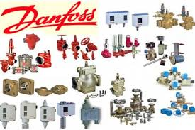

Danfoss EKC controllers are widely deployed in Gulf-region commercial and industrial refrigeration. Their value is high only when key control parameters are tuned correctly for actual load behavior.
Common EKC Models and Applications
Danfoss offers many EKC variants. In cold-room projects, these are the most frequent models:
| Model | Main Application | Sensor Count | Defrost Control |
|---|---|---|---|
| EKC 101 | Basic temperature control | 1 | No |
| EKC 202 | Cooling with electric defrost | 2 - 3 | Yes |
| EKC 301 | Condensing unit control | 2 | Partial |
| EKC 361 | Advanced industrial freezing | Up to 4 | Yes - advanced |
| EKC 414 | Evaporator and expansion valve logic | 3 | Yes |
EKC 202 Setup: Core Parameters for Cold Rooms
EKC 202 is common for chilled rooms and medium freezer applications. The following parameter groups matter most in field commissioning.
Temperature Parameters
Defrost Parameters
EKC 361 Setup for Industrial Freezing
EKC 361 fits deeper freezing applications and more advanced control logic. Typical reference values are:
Alarm Handling: Do Not Ignore Codes
EKC controllers expose fault and warning codes. Fast response prevents product loss and major failures.
| Code | Meaning | Immediate Action |
|---|---|---|
| E1 | S1 temperature sensor fault | Check wiring or replace sensor |
| E2 | S2 defrost sensor fault | Check mounting and continuity |
| A1 | High temperature alarm | Inspect doors, load pattern, and cooling performance |
| A2 | Low temperature alarm | Review set point and defrost behavior |
| dEF | Controller is in defrost mode | Normal status, not a fault |
| tEP | Temperature far outside expected range | Check compressor or possible refrigerant issue |
Common Field Configuration Mistakes
1. Very Wide Differential
A wide differential allows large room-temperature swings and can compromise product stability.
2. Too Many Defrost Cycles
Excessive defrosting adds energy load and can repeatedly lift room temperature unnecessarily.
3. Ignoring Drip Time
If drip time is too short, fans may distribute residual water and moisture back into the room.
Correct EKC Sensor Wiring Practice
Sensor placement and wiring quality directly affect control accuracy.
-
Use insulated moisture-resistant cable for sensor lines.
-
Respect practical cable-length limits unless compensated by suitable interface design.
-
Mount S1 in representative return-air location, not directly in evaporator discharge path.
-
Place S2 at the appropriate coil position for realistic defrost termination behavior.
-
Separate low-voltage sensor cables from power runs to reduce electrical noise.
Sensor Calibration
When controller reading differs from validated field measurement, use the proper offset parameter (model-dependent) to calibrate display and control behavior.
Need On-Site EKC Setup Support?
Elfarida Ice provides field setup, wiring verification, and programming support for Danfoss EKC families.
Contact Us Now